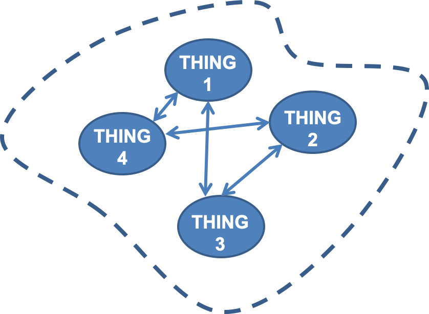

This module will introduce the basics of engineering balances. Just like forces (or momentum really) are balanced in physics to understand the forces and acceleration of systems using Newton’s Third Law—for every force there is an equal and opposite force—we apply this and other conservation laws to solve almost every problem in engineering. By correctly applying these conservation laws and the balance equations that result from them, we can derive the governing equations for a system that predict the behavior of the system.
At the end of this module you should be able to:
Once again, you will practice the skills we introduce here throughout the rest of this class and every class you take in biological systems engineering. It is always a good idea to revisit this regularly throughout your career.
Just as Newton’s Third Law defines that every force must be balanced by an equal and opposite force, we also know that mass and energy must be conserved, allowing their balance in space and time. The idea that matter and energy together cannot be be created or destroyed but instead converted from one form to another or transported from one system to another goes back to ancient philosophers in many different parts of the world. Antoine Lavoisier is most frequently credited with discovery of the “Law of Conservation of Mass” based on his quantitative experiments on the chemical conversion of mass during combustion. You may also have heard \(E = mc^2\), energy is equal to mass times the speed of light squared. Albert Einstein’s mass energy equivalence also demonstrates this conservation principle, but isn’t very useful in typical biological systems, unless you are dealing with radioactive decay, or maybe deep space travel. So what equations are useful for balancing mass and energy in biological systems?
We can define a general balance equation for any arbitrary system, like the systems we talked about at the very first beginning of this class. We sometimes also refer to systems as processes, depending on what the system/process is, but they can almost always be used interchangeably.

A balance around a system like that above can be written on any conserved quantity within the system, such as mass (of the total system, or individual species), energy, force, or momentum. If the system as shown above is closed, there is nothing crossing the system boundaries, then we can write a simple balance equation.
\[ \text{accumulation} = \text{generation} - \text{consumption}\] So for the conserved quantity of our choosing, its accumulation within the boundaries of the system is equal to its generation minus its consumption within the system. You could think about this being a bioreactor or a wastewater pond in which some reaction is happening. There may be a few different separable phases or compartments, or different species of microbes, representing the Things.
Because matter is conserved in chemical reactions—molecules can be consumed in the reaction(s) to generate new molecules but the atoms that comprise them can be neither created nor destroyed—we can write out a balance as above for each molecular species in the reaction, and this system of equations will satisfy the Law of Conservation of Mass. We start with a chemical reaction because biological systems are full of chemical reactions, but you could also think about balancing energy, forces, or momentum within a system in this way.
This balance based on conservation principles is also flexible because the boundaries around our system are arbitrary, they don’t necessarily need to be where they are drawn around all of the Things, we can draw them wherever is convenient for solving the problem at hand. For example, if we are most interested in what is going on in Thing 4 we could also draw a system, or a sub-system, around just Thing 1 and Thing 4.
A diagram of a general system with a boundary around Thing 1 and Thing 4.
In this case we have streams from Thing 1 and Thing 4 entering and/or leaving the system boundary. So we need to expand our general balance equation to include this input and output from our system, yielding the universal form of the balance equation. \[ \text{accumulation} = \text{input} + \text{generation} - \text{output} -\text{consumption}\]
This balance equation can be written out for any matter in our system, total mass, different types of matter, such as different chemicals, separable phases like sediment and water, or other entities like cells or people. It can also be written for other conserved quantities like energy, force or momentum. These are essentially the basis of thermodynamics (energy balances) and fluid dynamics (momentum balances).
In writing a balance for a particular species, input is the amount of the species that enters the system from across the boundary, generation is the amount of the species produced within the system, output is the amount of the species exiting across the system boundary, consumption is the amount the species consumed within the system, and accumulation is the amount of the species that builds up in the system.
Depending on which of these terms are included in our balances, and therefore what is going on in our system, we can define a few different types of systems or processes.
Balances around systems/processes are the basis of most engineering. So how do we use them? Let’s work an example to clarify.
Let’s write a balance around a city to determine how the population is changing.
Every year 50,000. people move into a city, 75,000 people move out, 22,000 are born, and 19,000 die.
To start we can write out our general balance, do you have it memorized yet?
\[ A = I + G - O - C\] Now we need to fill in those terms with our given information, describe them with an appropriate variable, or cancel them out with an assumption.
So now we can write out our balance and solve for the accumulation of people in this city. This makes accumulation here our variable of interest.
This example brings up a great question: What time frame are we measuring and trying to predict/engineer?
With any transient system or process—whether it is a batch fermentation of sourdough, a pilot bioreactor producing a vaccine, or a semi-batch water treatment plant—the accumulation term of the balances are clearly non-zero, and are changing with time. Going back to calculus, we can divide balances on such system into two categories:
So for some species or energy B, we can write differential and integral balances as follows, where \(\dot{B}\) represents a rate and \(B\) represents a quantity.
\[ \begin{array}{cccccc} \text{General:} &\text{accumulation}& = & \text{input} & + & \text{generation} & - & \text{output} & - & \text{consumption} \\ \text{Differential:}& \frac{dB}{dt} & = & \dot{B}_{\text{in}} & + & \dot{B}_{\text{gen}} & - & \dot{B}_{\text{out}} & - & \dot{B}_{\text{cons}} \\ \text{Integral:}& \Delta B & = & B_{\text{in}} & + & B_{\text{gen}} & - & B_{\text{out}} & - & B_{\text{cons}} \\ \end{array} \]
So in the above city example we have measured the given rates of people moving, dying, and being born, and we can find the rate accumulation of people at that point in time. This is a differential balance. If the problem was phrased as “In the past year 50,000 people moved into the city, … How has the population changed in the past year?” this would be an integral balance. In this case we can just multiply our differential balance by the time period \(\Delta t\) of 1 year to convert to the integral balance.
In this class we are mostly concerned with either integral balances or steady-state differential balances. Remember from above, at steady-state the accumulation term is zero, so this removes the derivative term, making the differential equation of our differential balance an algebraic equation. Occasionally, we will also integrate differential balances to calculate time. For example, given a flow rate into a tank calculate how long it will take to fill.
In future classes you will deal with true differential balances that allow you to derive expressions to predict the velocity and forces within moving fluids or the amount of time required for a culture of cells to reach a certain population size.
Going back to the algorithm for engineering calculations laid out in the previous lab we can expand a bit on steps 1 and 2 now that we have discussed deriving material balances.
Let’s put these steps into practice!
Let’s go back to the evaporator example from above.
To grow human cells in vitro (latin for in glass, meaning any science done in the lab in a glass or plastic vessel, outside of the native environment) you need to maintain high humidity and CO2 concentrations. The CO2 seems odd, but it is critical for maintaining the proper pH of the basic bicarbonate-buffered culture media. The CO2 dissolves into the media, becoming carbonic acid that can then donate or accept hydrogen ions, maintaining the pH. This bicarbonate buffer is the same way your body maintains its pH. Because your cells are constantly producing CO2 from metabolism, your body has around 5% dissolved CO2. If your blood is becoming acidic you may hyperventilate to expel excess CO2 and return to normal pH. Because the ocean isn’t buffered like our blood is, this is also how ocean acidification is caused by anthropogenic increases in atmospheric CO2.
So returning to the problem we want to install an evaporator unit which will evaporate liquid water into dry air to maintain humidity and also inject pure CO2 to maintain the buffer of a big cell culture environment, perhaps producing protein therapeutics, like antibodies, or vaccines.
If the evaporator can evaporate 20. cm3/min of water, what must the flow rate of dry air (0% H2O) from the air handling system be to achieve 1.5 mole% water in the outlet? At what rate must pure CO2 be delivered in order to achieve 5.0 mole% CO2?
Let’s put our calculation algorithm to use, and solve this!
Now we need to fill in the specifics of these balances, beginning with which species and subunits:
With the balances we can write defined, we can write the terms:
So to write out the balances for our example, filling in the table:
\[ \begin{array}{cccc} \text{General:} &\text{input} & = & \text{output} \\ \text{Total:}& \dot{n}_1 + \dot{n}_2 + \dot{n}_3 & = & \dot{n}_4 \\ \text{CO}_2\text{:}& \dot{n}_1 y_{1C} + \dot{n}_2 & = & \dot{n}_4 y_{4C} \\ \text{Air:}& \dot{n}_1 y_{1A} & = & \dot{n}_4 y_{4A} \\ \text{Water:}& \dot{n}_3 & = & \dot{n}_4 y_{4W}\\ \end{array} \] Note that only 3 of these equations are independent!!!
In this case there is no simplification we can do but our final step is:
Now we are ready for Step 3: Double check that you have enough information to solve the problem with a degree of freedom analysis.
We have a system of equations resulting from our material balances, containing some known and some unknown variables. Calculating the degrees of freedom of this system is simply an accounting exercise balancing the number of equations with the number of unknown variables. This let’s us know how many possible solutions there are to this system.
As a simple example of degrees of freedom we can think about the equation for a line. \[y = mx + b\] If we know the values of \(m\) and \(b\), we are left with 2 unknowns \(x\) and \(y\), which define a straight line. Since we only have this one equation our degrees of freedom analysis is \[ \begin{array}{rl} & 2 \text{ unknowns } (x \text{ and } y) \\ - & 1 \text{ equation} \\ \hline & 1 \text{ degree of freedom} \end{array} \] This one degree of freedom defines a line, we can plug in any value of \(x\) and calculate a \(y\), or vice versa.
If our analysis results in zero degrees of freedom then we have a single value for our unknowns that results in a “balanced” equation. Balancing is often used to describe solving a system for all unknowns. For example if our system resulted in two equations \(y = m_1x + b_1\) and \(y = m_2x + b_2\) and \(m_2\) and \(b_2\) are both known and the equations are independent then our degree of freedom analysis would result in 0 degrees of freedom. If we can simplify one more equations in our system to another, then they are not independent, e.g. if \(m_1\) and \(b_1\) can be multiplied by some single number to equal \(m_2\) and \(b_2\).
So in this case the degree of freedom analysis yields: \[ \begin{array}{rl} & 2 \text{ unknowns } (x \text{ and } y) \\ - & 2 \text{ equations} \\ \hline & 0 \text{ degree of freedom} \end{array} \] Zero degrees of freedom means that we have one value for each unknown that satisfies this system of equations. Visually, there is one intersecting point between these two lines. All other point along these lines satisfy only one equation.
If the number of degrees of freedom is zero the problem can be solved as currently laid out.
If the degrees of freedom are positive, the system is underspecified additional information must be made available to solve. Is there a balance missing, or some other relationship between variables available? Can you make an assumption to simplify the problem? Don’t forget energy balances, process specification, relationships between physical properties (like density, ideal gas laws), stoichiometry, or stream balances (the sum of component fractions in one stream must be 1). It the degrees of freedom are 1 or 2 you can possibly visualize the relationship between unknown variables and find some optimum.
If the degrees of freedom are negative the system is overspecified. Make sure you are not missing any unknowns, and your equations are independent. If everything checks out, proceed to solve the system and you can use the extra information to double check your solution.
Excellent, so we can solve this problem. How should we approach this?
In this case we have a system of 3 equations that we can solve. Looking back at our equations and flow diagram, we can identify equations that might only have one unknown that could be solved. If so this is clearly the place to start. Then we can proceed with solving other equations beginning with those containing the least unknowns.
Double check your answer using the remaining balance. Does your answer checkout?
So to sum up, let’s reiterate our expanded algorithm for material and energy balances: